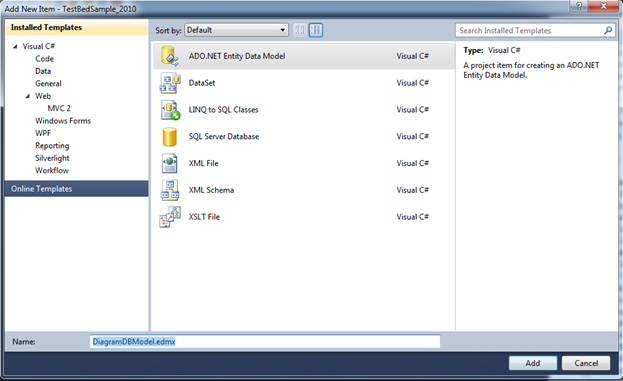
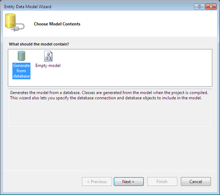
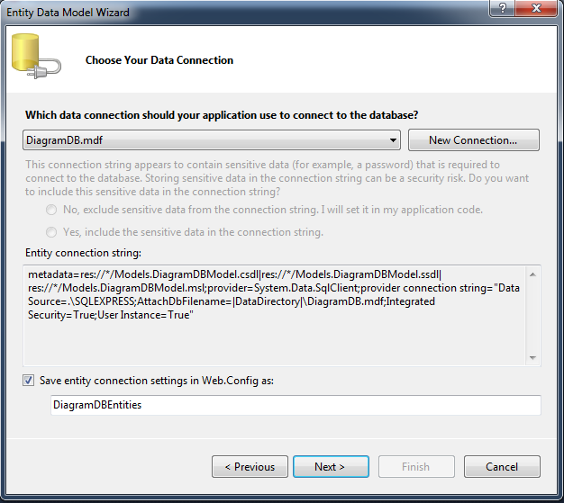
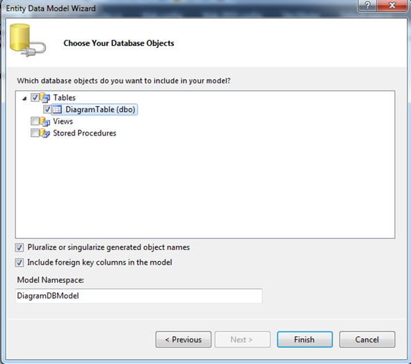
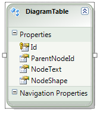

In order to use the Entity Framework, you need to create an Entity Data Model. You can take advantage of the Visual Studio Entity Data Model Wizard to generate an Entity Data Model from a database automatically.
To create the ADO.NET Entity Data Model:
1. Right-click the Models folder in the Solution Explorer window and select the menu option Add New Item.
2. In the Add New Item dialog, select the Data category (see Figure 152).

Figure 152: Creating a New Entity Data Model
3. Select the ADO.NET Entity Data Model template, give the Entity Data Model the name DiagramDBModel.edmx, and click Add. Clicking Add launches the Data Model Wizard.
4. In the Choose Model Contents step, choose the Generate from a database option and click Next (see Figure 153).

Figure 153: Choose Model Contents Step
5. In the Choose Your Data Connection step, select the DiagramDB.mdf database connection, enter the entities connection settings name DiagramDBEntities, and click Next (see Figure 154).

Figure 154: Choose Your Data Connection
6. In the Choose Your Database Objects step, select the database DiagramTable and click Finish (see Figure 155).

Figure 155: Choose Your Database Objects
When you have completed, you should have something like this:

Figure 156: DiagramDBEntity Model